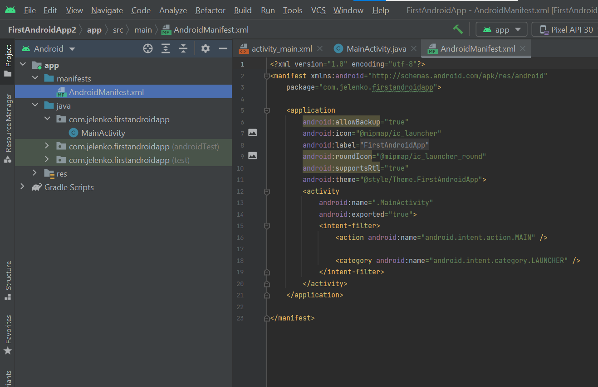

Android Manifest File
AndroidManifest.xml is a file without which no Android Application is able to function.
An Android application consists of many loosely coupled components, i.e. different activities, services, intents,.. All these components are united by a AndroidManifest.xml file in order to form a functional Android application. That's why it can be said that the AndroidManifest.xml file is the most important file of every Android application, which describes it in detail.
After building the application, this file becomes an integral part of a root folder of the .apk archive.
After installing the application on the device, the operating system first reads the content of this file, and based on the informations inside it, it learns the characteristics of the installed package.
The most important roles of the Manifest file :
- defining the name of the Java package of the application
- description of all application components
- defining the process that hosts the application
- defining permissions that must be provided by the application in order to access sensitive parts of the API
- defining the minimum version of the Android API that the application requires for its execution
- defining the external libraires used by the application.
Manifest file structure
The very simple content of the XML format is hidden behind the very serious functionality of the AndroidManifest.xml file. And the Manifest file is inside the app/src/main filder.
The content of the Manifest file in the example of the first "Hello World" Android Application is as follows:
<?xml version="1.0" encoding="utf-8"?> <manifest xmlns:android="http://schemas.android.com/apk/res/android" package="com.jelenko.firstandroidapp"> <application android:allowBackup="true" android:icon="@mipmap/ic_launcher" android:label="@string/app_name" android:roundIcon="@mipmap/ic_launcher_round" android:supportsRtl="true" android:theme="@style/Theme.FirstAndroidApp"> <activity android:name=".MainActivity" android:exported="true"> <intent-filter> <action android:name="android.intent.action.MAIN" /> <category android:name="android.intent.category.LAUNCHER" /> </intent-filter> </activity> </application> </manifest>
A Manifest file is made up of content in XML format. Therefor, this document begins with a classic XML declaration:
<?xml version="1.0" encoding="utf-8"?>
The declaration defines the version of the used XML language and the encoding type.
The root element of the AndroidManifest.xml file is the manifest element:
<manifest xmlns:android="http://schemas.android.com/apk/res/android" package="com.jelenko.firstandroidapp"> .... </manifest>
It is necessary to define the xmlns:android and package attributes on the manifest element.
The xmlns:android attribute defines the Android XML namespaces. The value of this attribute must always be :
http://schemas.android.com/apk/res/android
The package attribute defines the name of the Java package in which the program code of the Java application is located. It is the most ordinary Java package whose name must be unique. The package name serves as the unique identifier of the application on the Android system. When the package name is changed, the Android operating system sees the application as completely new.
Application element
The manifest element must directly contain the application element
<application android:allowBackup="true" android:icon="@mipmap/ic_launcher" android:label="@string/app_name" android:roundIcon="@mipmap/ic_launcher_round" android:supportsRtl="true" android:theme="@style/Theme.FirstAndroidApp"> <activity android:name=".MainActivity" android:exported="true"> <intent-filter> <action android:name="android.intent.action.MAIN" /> <category android:name="android.intent.category.LAUNCHER" /> </intent-filter> </activity> </application>
The application element represents an application declaration. This element contains sub-elements that define each of the application's components and attributes that affect the behavior of all components.
The Android Studio development environment sets the values of several attributes by default :
android:allowBackup
This attribute defines whether the application will participate in the backup and restore system.
android:icon
This attribute defines the application icon. The value of this attribute must point to a resource representing a graphic file. By default, Android Studio sets the value of this attribute to a path that points to a resource located inside the res folder of the Android project structure.
android:label
This attribute defines the user-friendly name of the application, that is, the name intended for users. In the example of the Manifest file of the first Android application, the value of this attribute is set to a reference to the string resource containing the name of the application.
android:supportsRtl
This attribute declares support for right-to-left layouts. These are special situations in which it is necessary to display the text of the application written from right to left. Some languages (Persian, Arabic, Hebrew) have scripts that are written from right to left. In order to enable application support for such situations as well, the value of this attribute is set to true.
android:theme
This attribute defines the styles used to determine the formatting and styling of all Android application activities.
Activity element
Every Android application must have at least one activity, and activities take care of handling the interaction that the user performs with the application's GUI.
<activity android:name=".MainActivity" android:exported="true"> <intent-filter> <action android:name="android.intent.action.MAIN" /> <category android:name="android.intent.category.LAUNCHER" /> </intent-filter> </activity>
The activity element within the manifest file defines one activity. All activities that the application consists must be listed within the manifest file, as separate activity elements.
Element activity defines one attribute :
android:name
This attribute specifies the name of the class that represents the activity. As a rule, the value of this attribute should be the full name of the Java class. The full name of the class is formed from the names of all packages in which the class is located, to which is added the name of the class itself. In short, the value of this attribute is written using a dot and the class name, thus the class name is automatically appended to the defined package within the Manifest file.
Intent-filter element
Inside the activity element of the Manifest file there is an intent-filter element. This element defines the type of the request to which our activity will be able to form a response. That is, it defines what our activity will be able to do.
<intent-filter> <action android:name="android.intent.action.MAIN" /> <category android:name="android.intent.category.LAUNCHER" /> </intent-filter>
Each intent-filter element must have at least one defined action. The action element is used for these purposes.
In the shown example, a special construction is created as the value of the name attribute :
android.intent.action.MAIN
In this case, it is defined that the activity .MainActivity will be the entry point of the application. In other words, in this case, it is said that immediately after starting the application, the creation of an activity containing an intent-filter with this action will be performed.
In addition to the action element, the intent-filter element also contains a category element:
<category android:name="android.intent.category.LAUNCHER" />
This element describes the defined action element in more detail, and its value in the specific shown example indicates that it is necessary to display the icon for launching the application in the main application launcher.